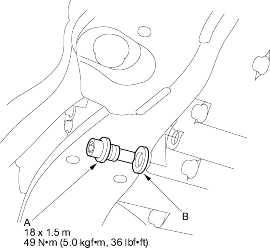

- Bring the transmission up to operating temperature (the radiator fan comes on) by driving the vehicle.
- Park the vehicle on level ground and turn the engine off.
- Remove the drain plug (A) and drain the automatic transmission fluid (ATF).

- Reinstall the drain plug with a new sealing washer (B).
- Refill transmission with the recommended fluid into dipstick hole to the upper mark on the dipstick. Always use genuine Honda ATF-Z1 Automatic Transmission Fluid (ATF). Using a non-Honda ATF can affect shift quality.
Automatic Transmission Fluid Capacity:
2.7 l (2.9 US qt, 2.4 lmp qt) at change
6.0 l (6.3 US qt, 5.3 lmp qt) at overhaul